3 Data visualisation
library(tidyverse)3.1 First steps
3.1.1 Exercise
Q1. Run ggplot(data = mpg). What do you see?
ggplot(data = mpg)
Ans1. A blank plot. We have not mapped anything to aesthetics.
Q2. How many rows in mpg? How many columns?
Ans2. Running dim(mpg) gives 234 rows and 11 columns. Alternatively one can also run nrow(mpg) to obtain number of rows and ncol(mpg) to obtain the columns. Futher, one can also use str(mpg). The first line conatins the required information.
dim(mpg)## [1] 234 11Q3. What does drv variable describe? Read the help for ?mpg to find out.
Ans3. The drv describes how the cars drives i.e. by front two wheels, the rear wheels or all four wheels.
| f | r | 4 |
|---|---|---|
| front-wheel drive | rear wheel drive | 4wd |
Q4. Make a scatter plot for hwy vs cyl.
Ans4.
ggplot(mpg, mapping = aes( x = hwy, y = cyl)) + geom_point()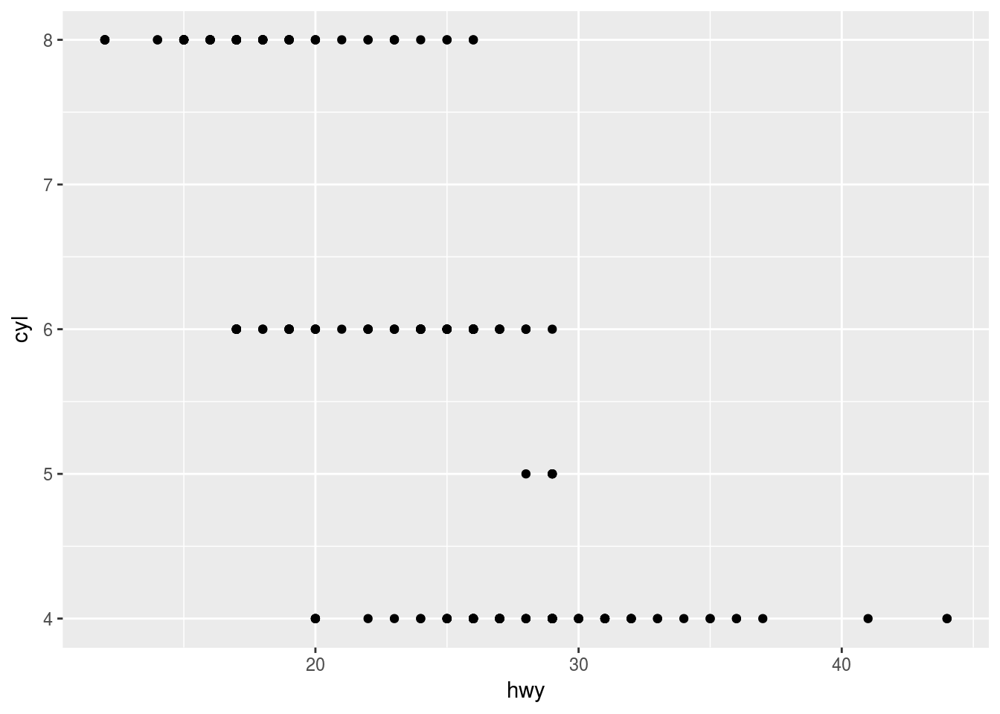
Q5. What happens if you make a scatterplot of class vs drv? Why is the plot not useful?
Ans5.
ggplot(mpg, mapping = aes( x = class, y = drv)) + geom_point() 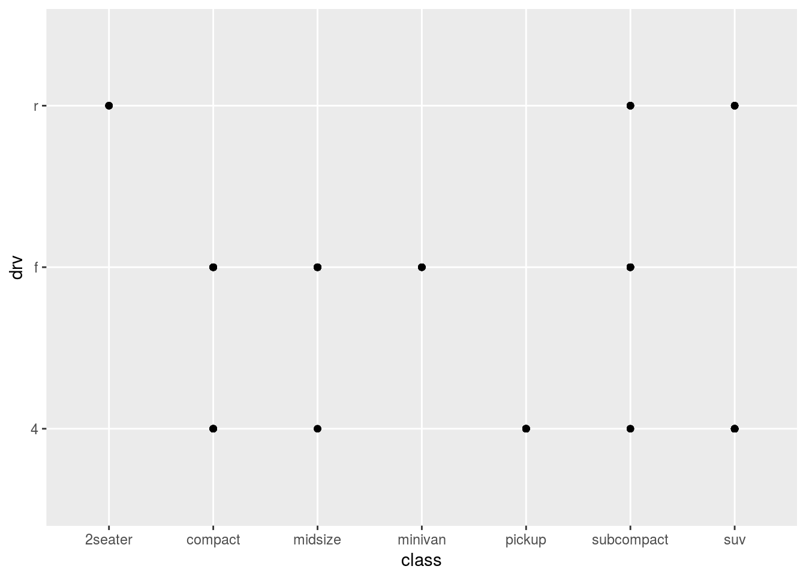
The plot is not useful because of overploting. For example there are many cars of compact class but from the plot it seems as if there are only two cars.
3.2 Aesthetic mapping
An aesthetic is a visual property of the objects in the plot. It include things like the color, the shape, or the size of the points. We can convey the information about the data by mapping the aesthetics in the plot to the variables in the dataset. For example, colors of the points can be mapped to the class variable to show the class of each car.
3.2.1 Exercise
Q1. What’s wrong with this code? Why are the points not blue?
ggplot(data = mpg) +
geom_point(mapping = aes(x = displ, y = hwy, color = "blue"))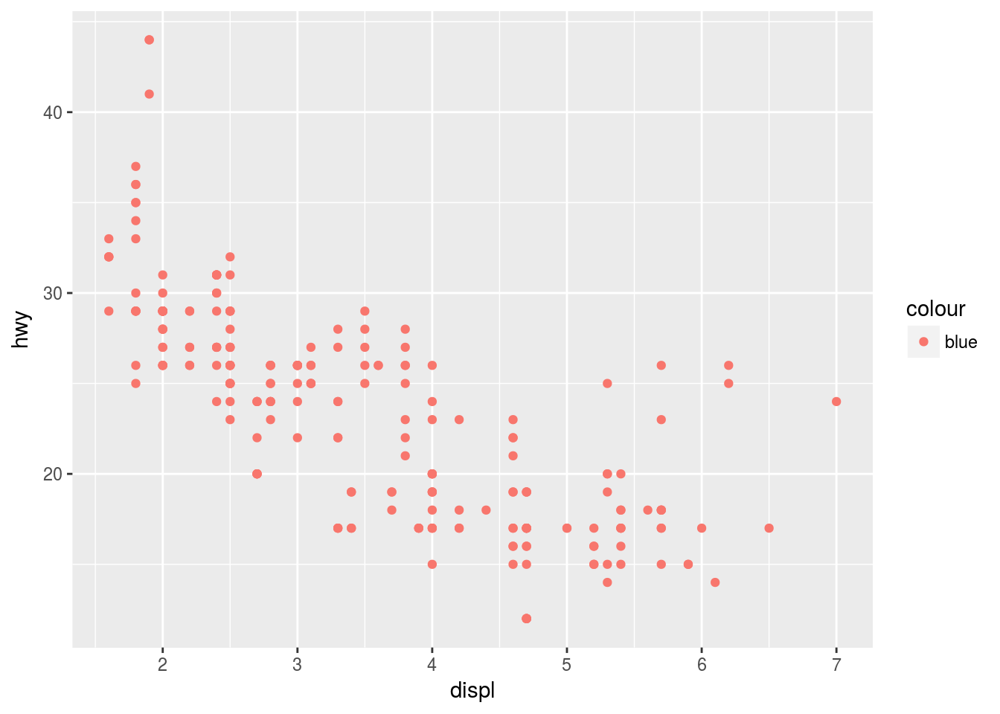
Ans1. In order for points to be colored the blue argumnet color should be outside the aes layer like shown below:
ggplot(data = mpg) +
geom_point(mapping = aes(x = displ, y = hwy), color = "blue")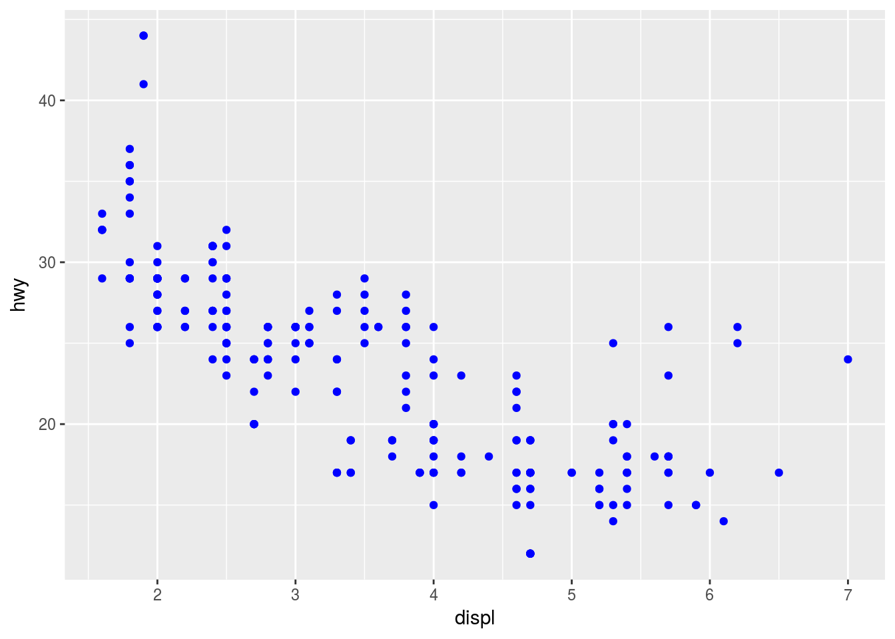
Q2. Which variable in mpg are categorical?Which are continuous?(Hint: type ?mpg to read the documentation for the dataset). How can you see this information when you run mpg)?
Ans2. We can use either ?mpgand read from the help page or can run str(mpg) to find out about the type of variables in the mpg dataset.
str(mpg)## Classes 'tbl_df', 'tbl' and 'data.frame': 234 obs. of 11 variables:
## $ manufacturer: chr "audi" "audi" "audi" "audi" ...
## $ model : chr "a4" "a4" "a4" "a4" ...
## $ displ : num 1.8 1.8 2 2 2.8 2.8 3.1 1.8 1.8 2 ...
## $ year : int 1999 1999 2008 2008 1999 1999 2008 1999 1999 2008 ...
## $ cyl : int 4 4 4 4 6 6 6 4 4 4 ...
## $ trans : chr "auto(l5)" "manual(m5)" "manual(m6)" "auto(av)" ...
## $ drv : chr "f" "f" "f" "f" ...
## $ cty : int 18 21 20 21 16 18 18 18 16 20 ...
## $ hwy : int 29 29 31 30 26 26 27 26 25 28 ...
## $ fl : chr "p" "p" "p" "p" ...
## $ class : chr "compact" "compact" "compact" "compact" ...Q3. Map a continuous variable to color, size and shape. How do these aesthetics behave differently for categorical vs. continuous variables?
Ans3.
- Mapping color to continuous variable.
When mapping a continuous variable to color,for example cty is mapped to color, a color gradient is displayed to represent the values of the continuous variable. By defalut ggplot creates a color gradient from light blue to dark blue.
ggplot(mpg, aes(x = displ, y = cty, color = cty)) + geom_point()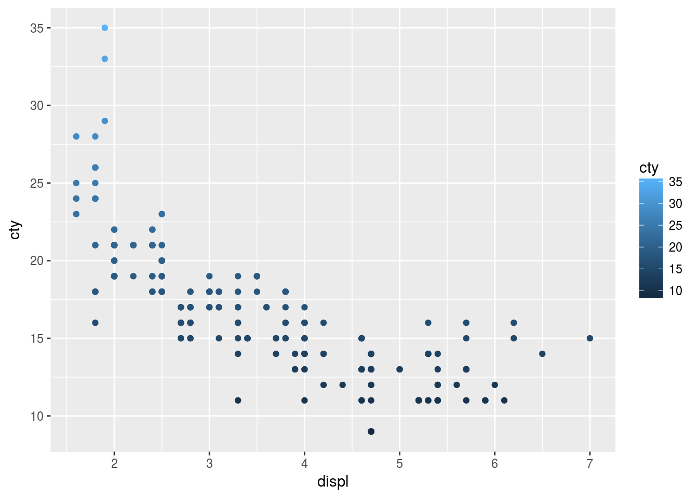
- Mapping size to continuous variable.
ggplot(mpg, aes(x = displ, y = cty, size = cty)) + geom_point()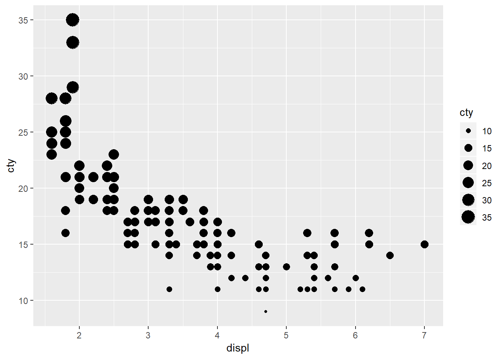
- Mapping shape to continuous variable.
ggplot(mpg, aes(x = displ, y = cty, shape = cty)) + geom_point()## Error: A continuous variable can not be mapped to shapeMapping a shape to continuous variable does not make sense. The continuous variable have a natural order but shapes have no natural order for example we cannot say a rectangle is greater or less than a triangle.
- Mapping color to a categorical variable
ggplot(mpg, aes(x = displ, y = cty, color = class)) + geom_point()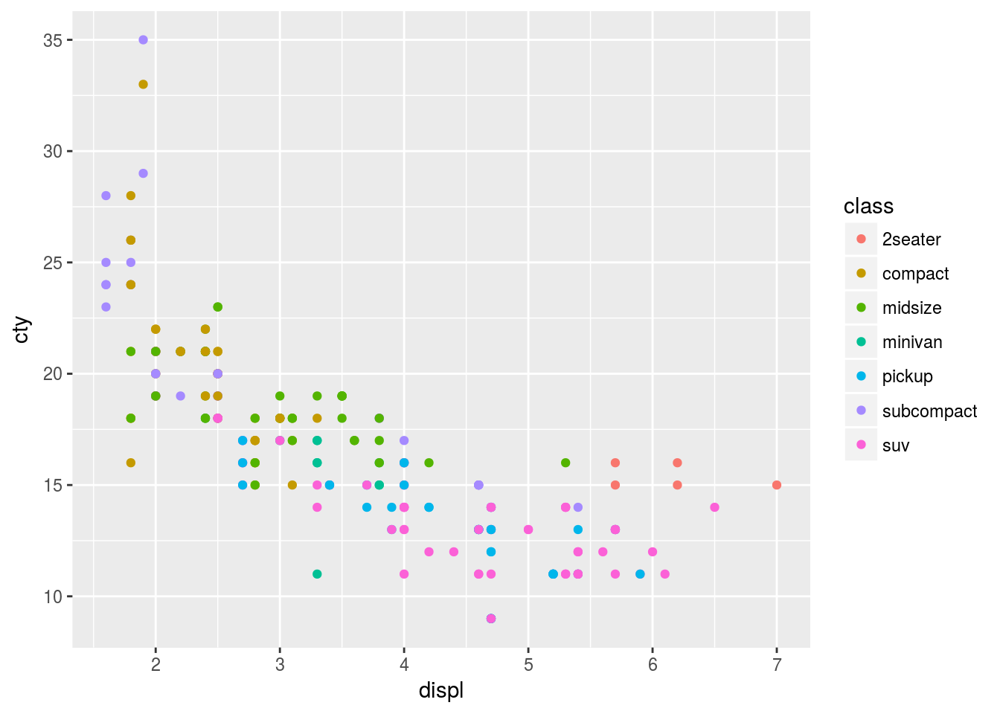
Q4. What happens if you map the same variable to multiple aesthetics?
Ans4. It is possible to map the same variable to multiple aesthetics provided the mapping is allowed for the aesthetic. However, mapping the same variable adds redundant information and should be avoided. For example drv variable is mapped to the color and shape aesthetic in the plot below.
ggplot(mpg, aes(x = displ, y = hwy, color = drv, shape = drv)) + geom_point()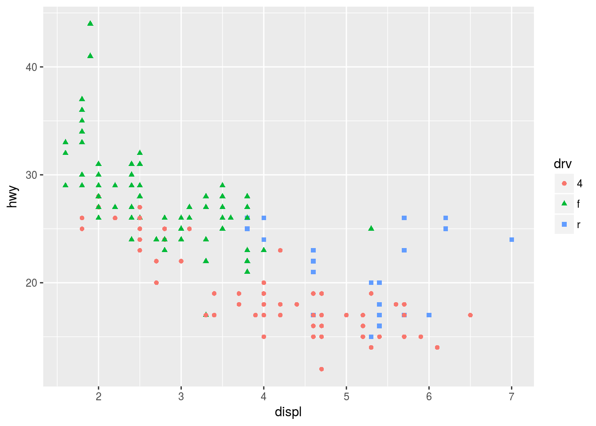
Q5. What does the stroke aesthetic do?What shapes does it work with?(Hint: use ?geom_point)
Ans5. The stroke aesthetic is used to change the border for shapes 21-25 which is given as property to geom_points(). The size and color of the border can be altered with the stroke and color. For example
ggplot(mpg, aes(x = displ, y = hwy)) + geom_point(shape = 21, fill = "yellow", size = 3, stroke = 3, color = "black")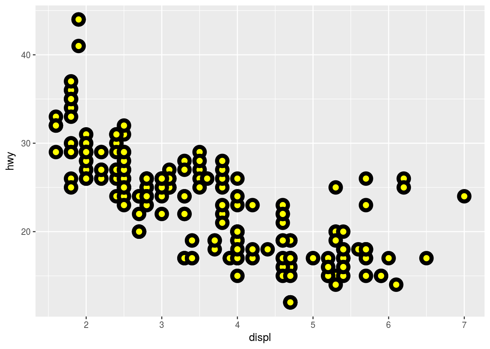
Q6. What happens if you map an aesthetic to something other than the variable name, like aes(color = displ <5) ?
Ans6. This will divide the data in two parts and create a temporary boolean variable indicating TRUE if the observations satisfy the condition FALSE otherwise. For example
ggplot(mpg, aes(x = displ, y = cty, color = displ<5 )) + geom_point()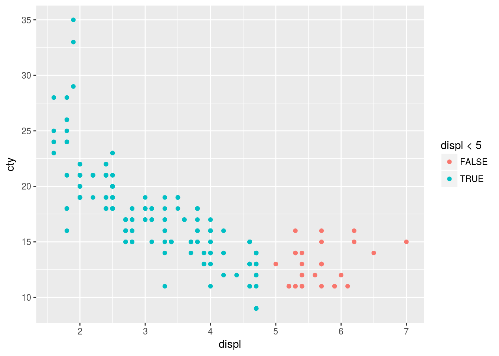
3.3 Common Problems
While creating plots using ggplot it is mandatory to put + at the end and not at the start of the statements. For example
ggplot(data = mpg) +
geom_point(mapping = aes(x = drv, y = cyl))3.4 Facets
Facets are used to split the plots based on variables particularly useful for categorical variables. facet_warp is used to split the plot using single variable and facet_grid is used to split the plot using a combination of variables.
3.4.1 Exercise
Q1. What happens if you facet on a continuous variable?
Ans1. The facet will convert the continuous variable into factors and we get as many plots as factors. For example
ggplot(mpg, aes(x = displ, y = cty, color = drv)) + geom_point() + facet_wrap(~cyl)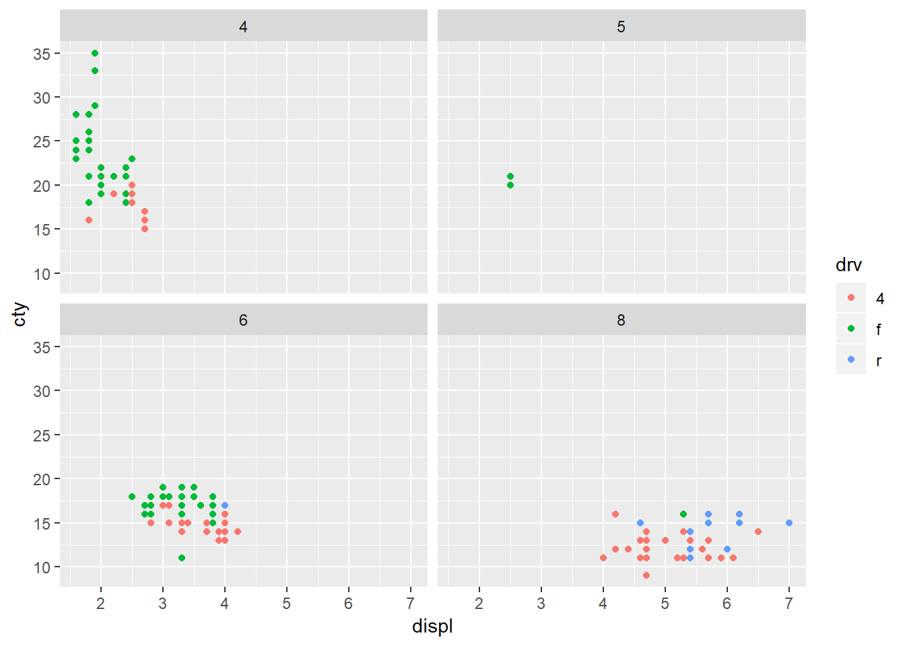
Q2. What do the empty cells in plot with facet_grid(drv ~ cyl) mean?How do they relate to this plot?
Ans2.
ggplot(mpg, aes(x = displ, y = cty)) +
geom_point() +
facet_grid(drv ~ cyl)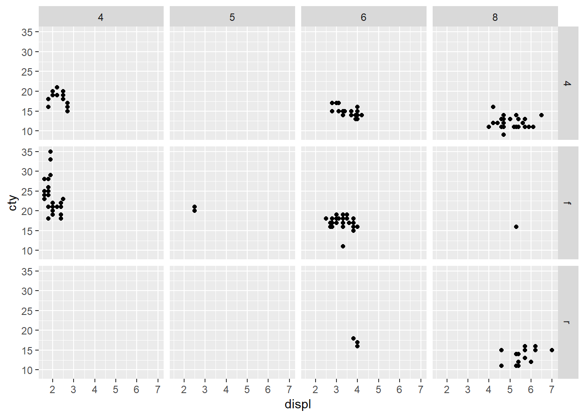
The empty grids in the `facet_grid(drv ~ cyl) represents the fact that there are no observations for a particular combination of drv and cyl.
Q3. What plot does the following code make? What does . do ?
Ans3. The general formula in the facet_grid plots is facet_grid(ROWS ~ COLUMNS). A . means to ignore the faceting in that dimension.
ggplot(data = mpg) +
geom_point(mapping = aes(x = displ, y = hwy)) +
facet_grid(drv ~ .)
The first plot compares displ vs hwy and rows are facetted by drv while there is no facetting by columns.
ggplot(data = mpg) +
geom_point(mapping = aes(x = displ, y = hwy)) +
facet_grid(. ~ cyl)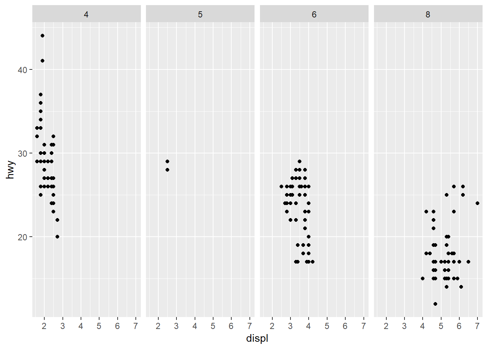
The second plot compares displ vs hwy and columns are facetted by cyl while there is no facetting by rows.
Q4. Take the first faceted plot in this section:
ggplot(data = mpg) +
geom_point(mapping = aes(x = displ, y = hwy)) +
facet_wrap(~ class, nrow = 2)
What are the advantages to using faceting instead of the colour aesthetic? What are the disadvantages? How might the balance change if you had a larger dataset?
Ans4. The advantage of faceting is clear when there are many groups in a large dataset. As the number of unique groups rise it becomes increasingly confusing to distinguish groups using different colors in the same plot.
The same plot when the class is represented by color aesthetic rather than faceting.
ggplot(data = mpg) +
geom_point(mapping = aes(x = displ, y = hwy, col = class))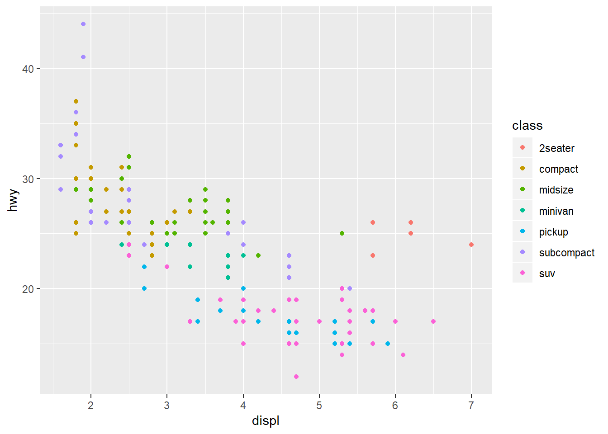
A possible disadvantage of faceting is that since the observations are divided into separate plots a direct comparision may be difficult. Therefore, it may be worth showing each group with a different color in the same plot if the dataset is smaller and there are small numbet of groups to compare.
Q5. Read ?facet_wrap. What does nrow do? What does ncol do? What other options control the layout of the individual panels? Why doesn’t facet_grid() have nrow and ncol arguments?
Ans5. nrow and ncol refer to number of rows and columns of the panel in a facet_wrap plot. It is useful to specify number of rows or columns because facet_wrap facets using only one variable. For example
Facet with 1 row
ggplot(data = mpg) +
geom_point(mapping = aes(x = displ, y = hwy)) +
facet_wrap(~ class, nrow = 1)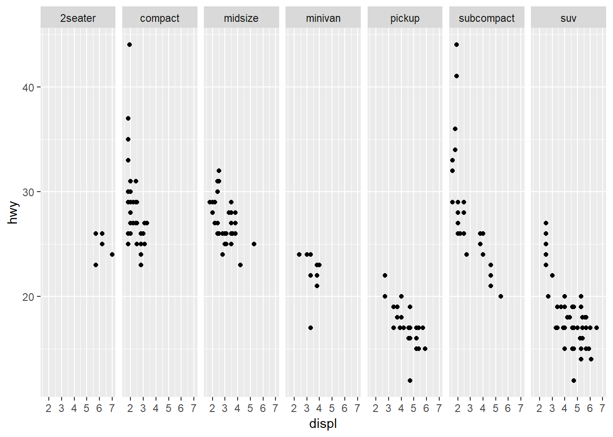
Facet with two rows
ggplot(data = mpg) +
geom_point(mapping = aes(x = displ, y = hwy)) +
facet_wrap(~ class, nrow = 2)
These arguments are unnecessary in facet_grid because the number of rows and columns are automatically calculated from the unique values of the variables specified in the facet_grid(ROWS ~ COLUMNS) command.
Q6. When using facet_grid() you should usually put the variable with more unique levels in the columns. Why?
Ans6. It is advised to put variables with more unique levels in columns in a landscape mode because it is much easier visually to see the trend in a dependent variable y by scanning horizontally. For example
More unique levels in rows
ggplot(data = mpg) +
geom_point(mapping = aes(x = displ, y = hwy)) +
facet_grid(class ~ drv)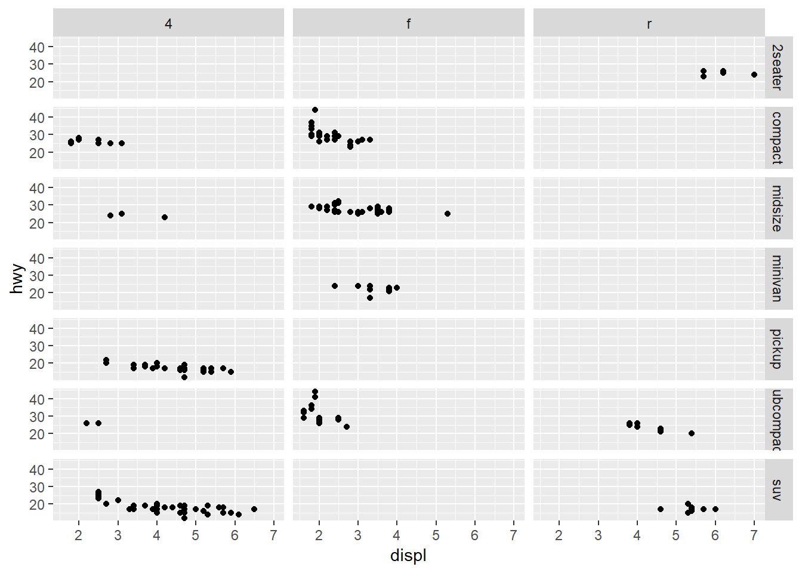
More unique values in columns
ggplot(data = mpg) +
geom_point(mapping = aes(x = displ, y = hwy)) +
facet_grid(drv ~ class)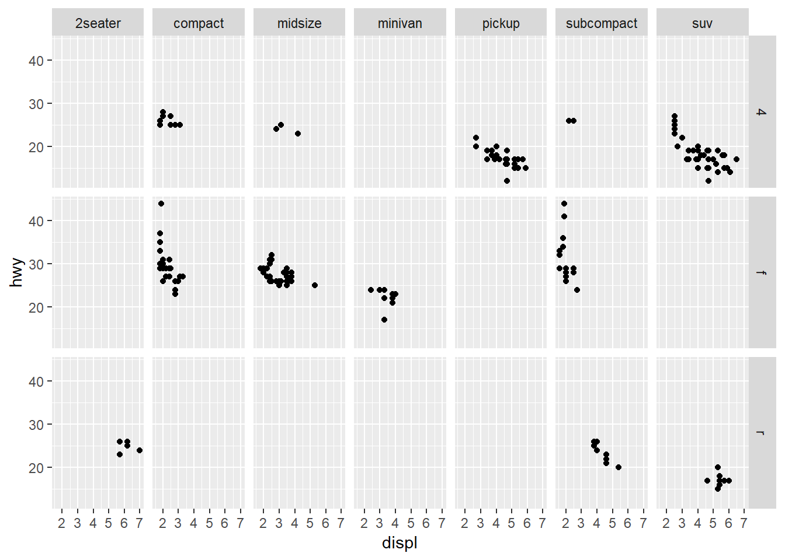
3.5 Geometric object
A geom is the geometric object that a plot uses to display the data. For example a line chart uses line geoms and bar chart uses a bar geoms and so on to display the data.
3.5.1 Exercise
Q1. What geom would you use to draw a line chart? A boxplot? A histogram? An area chart?
Ans1.
- line chart:
geom_line() - boxplot:
geom_boxplot() - histogram:
geom_hist() - area chart:
geom_area()
Q2. Run this code in your head and predict what the output will look like. Then, run the code in R and check your predictions.
ggplot(data = mpg, mapping = aes(x = displ, y = hwy, color = drv)) +
geom_point() +
geom_smooth(se = FALSE)## `geom_smooth()` using method = 'loess' and formula 'y ~ x'The above code will produce a scatterplot between displ and hwy. The points will be colored by drv and there will be a smooth line without standard errors for each group of drv. It is worth noticing that the mapping is defined in ggplot() therefore, it passes to geom_point() and geom_smooth().
ggplot(data = mpg, mapping = aes(x = displ, y = hwy, color = drv)) +
geom_point() +
geom_smooth(se = FALSE)## `geom_smooth()` using method = 'loess' and formula 'y ~ x'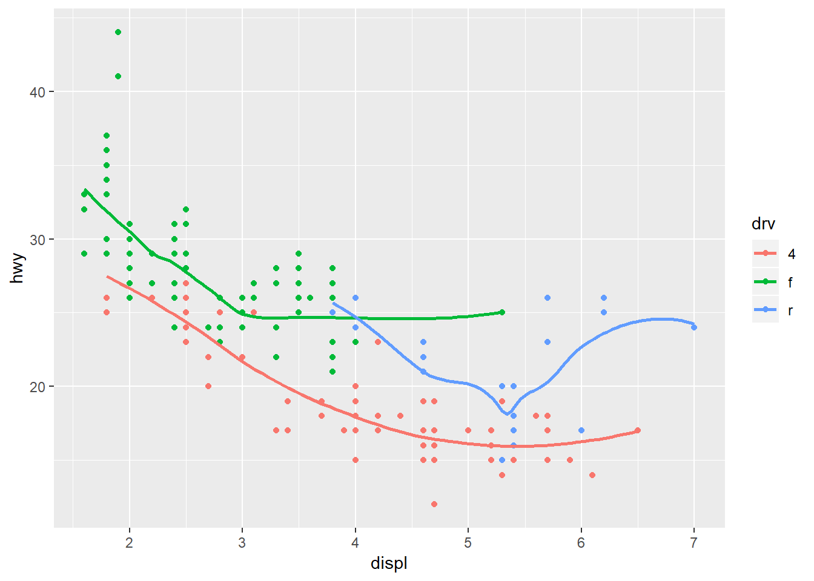
Q3. What does show.legend = FALSE do? What happens if you remove it? Why do you think I used it earlier in the chapter?
Ans3. show.legend = FALSE will hide the legend. For example
ggplot(data = mpg, mapping = aes(x = displ, y = hwy, color = drv)) +
geom_point(show.legend = FALSE)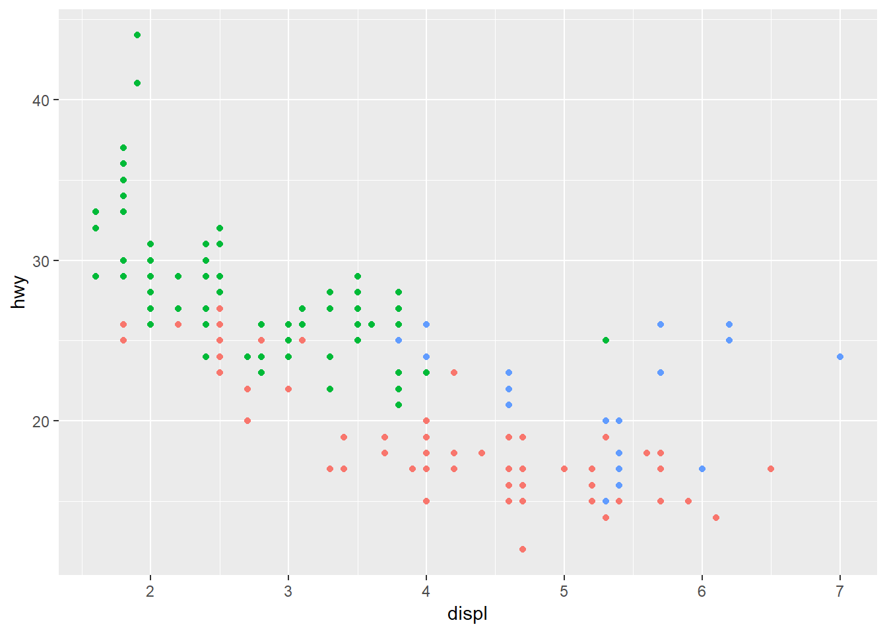
If we remove it the legend is displayed which is automatically created when a variable is mapped to aesthetics like size, shape or color. The last part of the question refers to the following code
ggplot(data = mpg) +
geom_smooth(mapping = aes(x = displ, y = hwy))## `geom_smooth()` using method = 'loess' and formula 'y ~ x'ggplot(data = mpg) +
geom_smooth(mapping = aes(x = displ, y = hwy, group = drv))## `geom_smooth()` using method = 'loess' and formula 'y ~ x'ggplot(data = mpg) +
geom_smooth(
mapping = aes(x = displ, y = hwy, colour = drv),
show.legend = FALSE)## `geom_smooth()` using method = 'loess' and formula 'y ~ x'In the above code legend was suppressed in the last plot because the context of the code was to show the difference between mapping a variable to group (which does not add legend by itself) and color (which add legends) aesthetic.
Q4. What does the se argument to geom_smooth do?
Ans4. se argument is used to display se = TRUE or hide se = FALSE the standard error bands to the line. se is TRUE by default. For example
se = TRUE
ggplot(data = mpg, mapping = aes(x = displ, y = hwy, colour = drv)) +
geom_point() +
geom_smooth(se = TRUE)## `geom_smooth()` using method = 'loess' and formula 'y ~ x'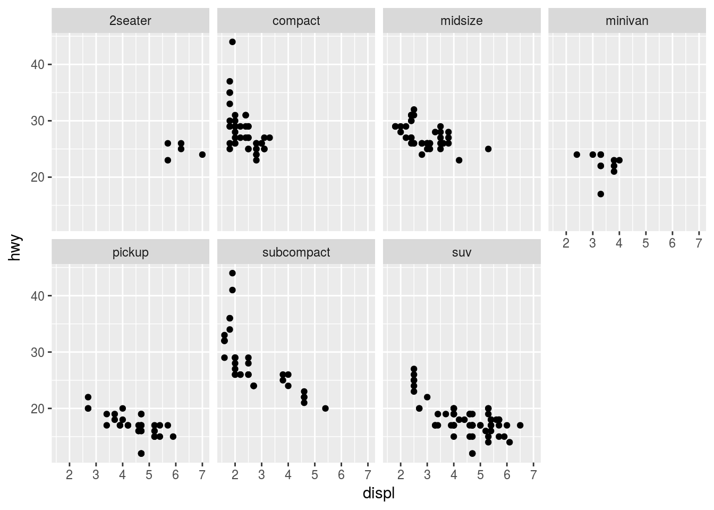
se = FALSE
ggplot(data = mpg, mapping = aes(x = displ, y = hwy, colour = drv)) +
geom_point() +
geom_smooth(se = FALSE)## `geom_smooth()` using method = 'loess' and formula 'y ~ x'Q5. Will these two graphs look different? Why/why not?
ggplot(data = mpg, mapping = aes(x = displ, y = hwy)) +
geom_point() +
geom_smooth()## `geom_smooth()` using method = 'loess' and formula 'y ~ x'ggplot() +
geom_point(data = mpg, mapping = aes(x = displ, y = hwy)) +
geom_smooth(data = mpg, mapping = aes(x = displ, y = hwy))## `geom_smooth()` using method = 'loess' and formula 'y ~ x'Ans5. No, because in the second plot both geom_point() and geom_smooth() take same data and mappings as defined in ggplot in the first plot. Infact geom objects can inherit those values from ggplot object, therefore, it is unnecessary to be specified again.
Q6. Recreate the R code necessary to generate the following graphs.
Ans6.
Plot 1
ggplot(mpg, aes(x = displ, y = hwy)) +
geom_point() +
geom_smooth(se = FALSE)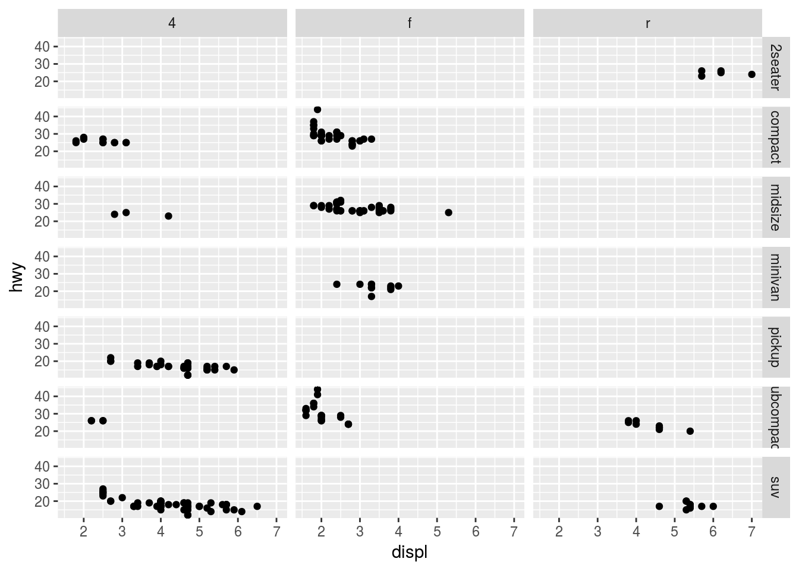
Plot 2
ggplot(mpg, aes(x = displ, y = hwy, group = drv)) +
geom_point() +
geom_smooth(se = FALSE)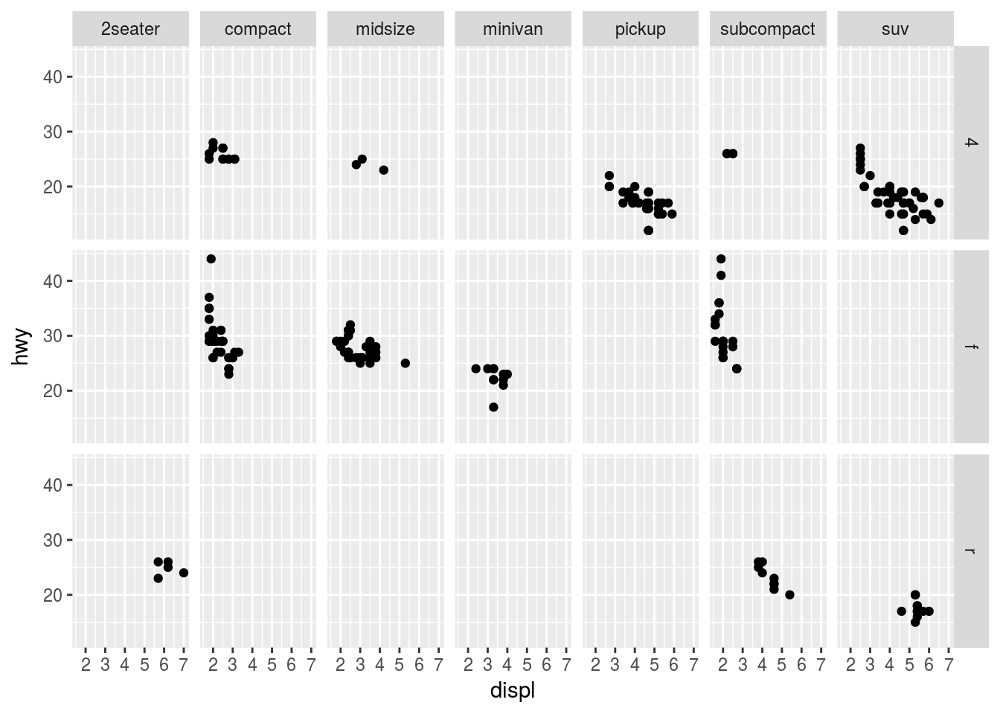
Plot 3
ggplot(mpg, aes(x = displ, y = hwy, color = drv)) +
geom_point() +
geom_smooth(se = FALSE)
Plot 4
ggplot(mpg, aes(x = displ, y = hwy)) +
geom_point(aes(color = drv)) +
geom_smooth(se = FALSE)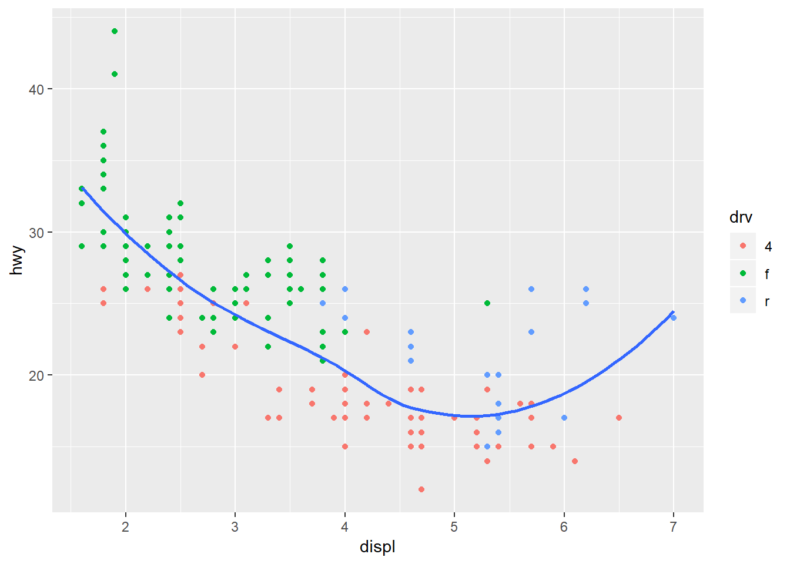
Plot 5
ggplot(mpg, aes(x = displ, y = hwy)) +
geom_point(aes(color = drv)) +
geom_smooth(se = FALSE, aes(linetype = drv))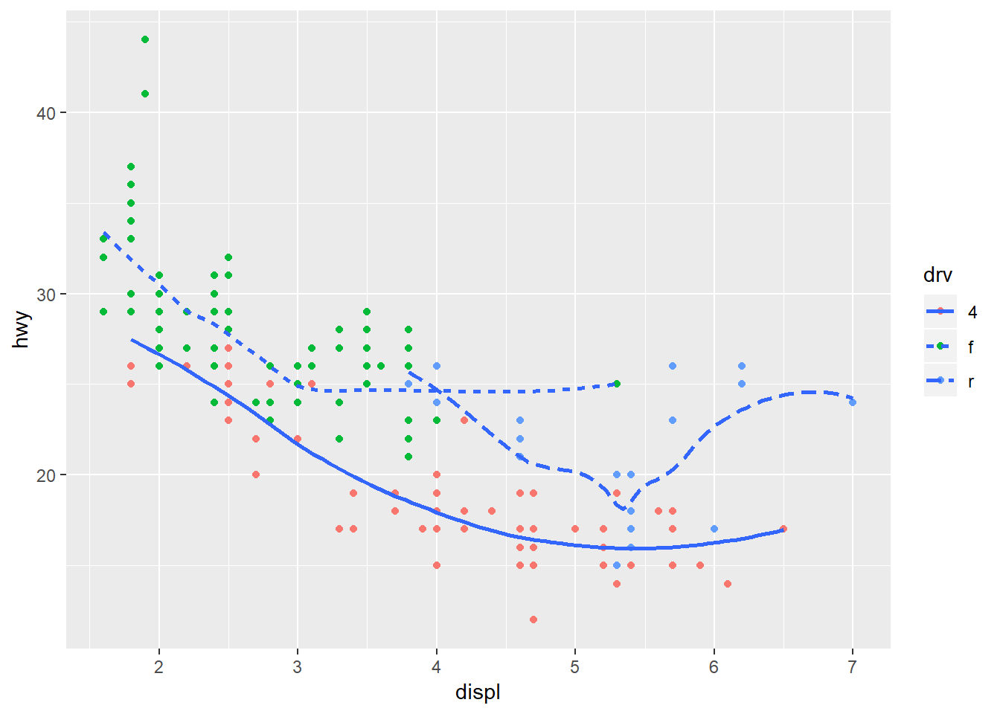
Plot 6
ggplot(mpg, aes(x = displ, y = hwy)) +
geom_point(color = "white", size = 4) +
geom_point(aes(color = drv))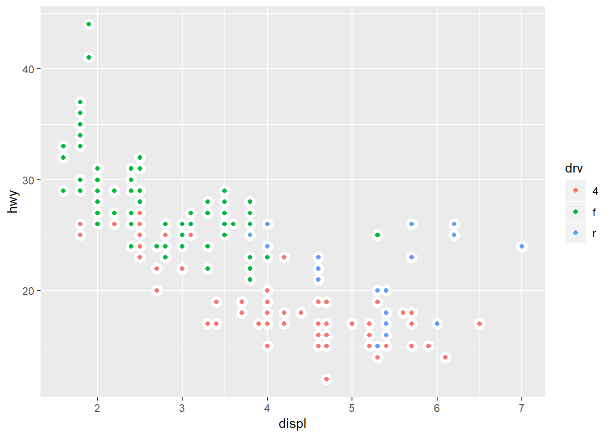
3.6 Statistical transformations
Some graphs like bar charts, boxplots uses an algorithim to calculate new values to generate a plot. The algorithim used is called stat (statistical transformations). For example bar charts, histograms or frequency polygons bin the data and then plot the count of the points that fall in each bin. The counts are originally not necessarily present in the original data.
Q1. What is the default geom associated with stat_summary()?. How could you rewrite the previous plot to use that geom function instead of the stat function?
Ans1. The default geom assocaited with stat_summary is geom_pointrange. See ?stat_summary. The default stat in geom_pointrange is “identity” therefore, using “summary” and change the min, max and midpoint to produce the same plot.
ggplot(diamonds, aes(x = cut, y = depth)) +
geom_pointrange(stat = "summary",
fun.ymin = min,
fun.ymax = max,
fun.y = median
)